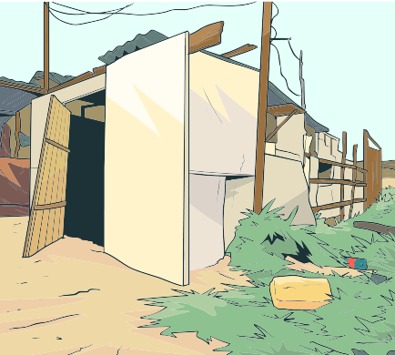

POLÍTICAS PÚBLICAS EM SAÚDE
POLÍTICAS PÚBLICAS EM SAÚDE

Klintowitz, Moreira e Tavares (2020), em publicação realizada no jornal digital Nexo, apresentaram números relativos à desigualdade socioespacial no Brasil.
Arraste para o lado e conheça esses números.
Os autores apontam que 4 milhões de famílias residem em domicílios sem banheiros, 35 milhões sem água tratada e 100 milhões sem rede de esgoto. Os autores enfatizam que o município de São Paulo (SP), o mais populoso do país, tem 30% da população vivendo em favelas e loteamentos clandestinos e 24 mil pessoas em situação de rua.
Ainda segundo os autores, no Pará, a região metropolitana da capital, Belém, tem 66% dos domicílios em aglomerados subnormais e, por último, quase metade da população de Salvador, município com a quarta maior população brasileira – ficando a atrás de São Paulo (SP), Rio de Janeiro (RJ) e Brasília (DF) – vive em áreas de risco de alagamento e desabamento (KLINTOWITZ, MOREIRA; TAVARES, 2020).
Em relação à questão habitacional, Klintowitz, Moreira e Tavares (2020) destacam que há 7 milhões de imóveis vagos e que, desses, 6,3 milhões poderiam ser convertidos em moradia. Aproximando essas informações dos dados da Fundação João Pinheiro (2021), o déficit habitacional estimava uma carência de 5,060 milhões de domicílios em áreas urbanas.